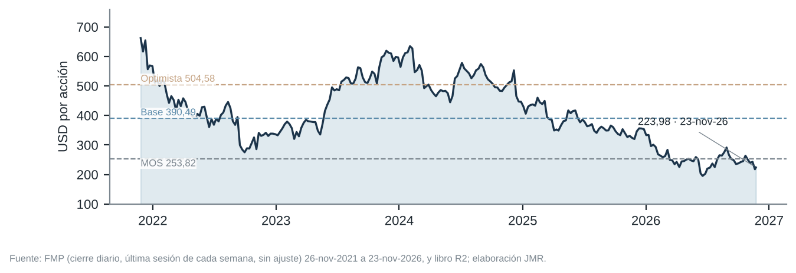
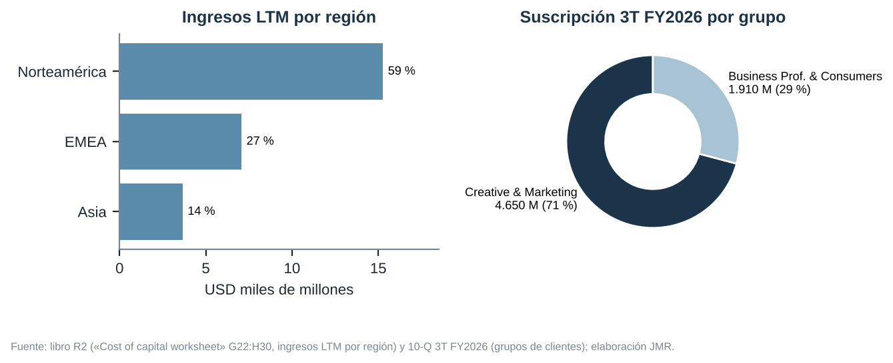
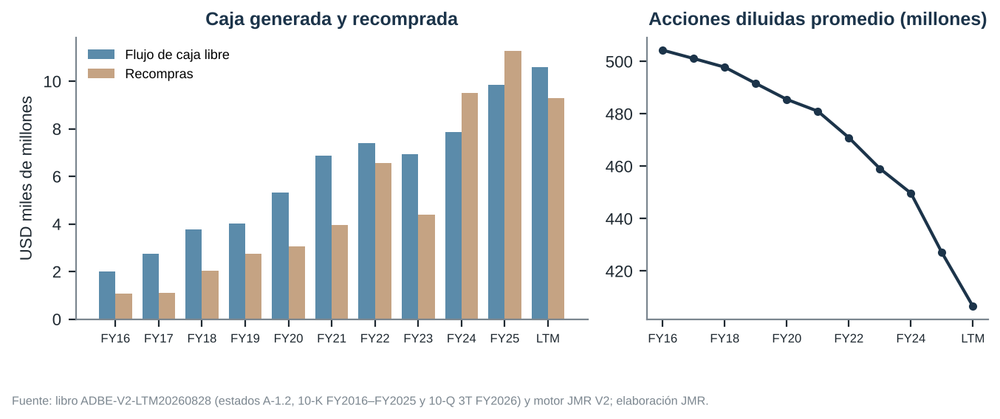
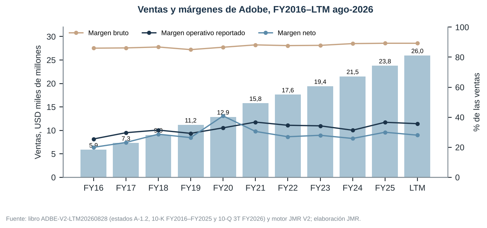
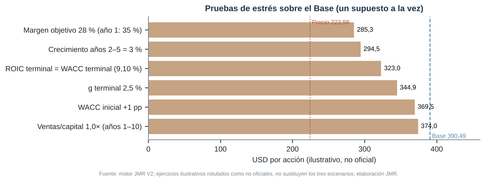
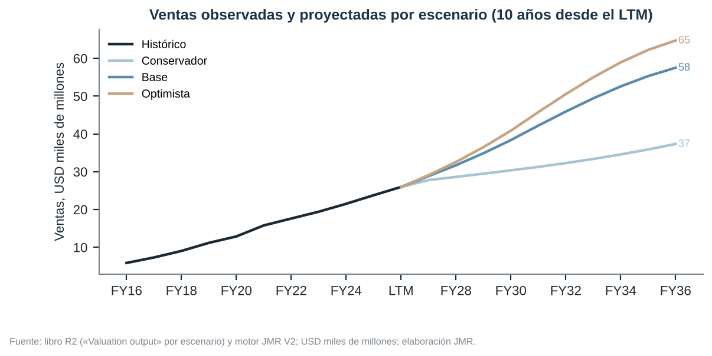
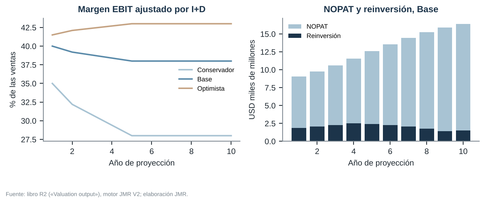
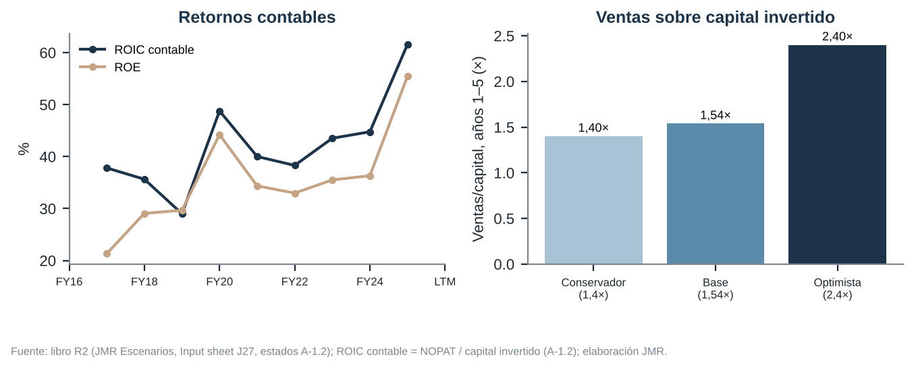
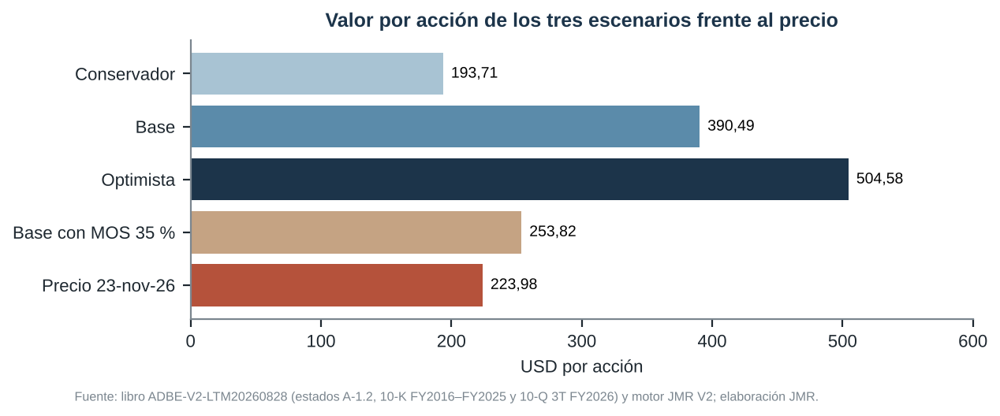
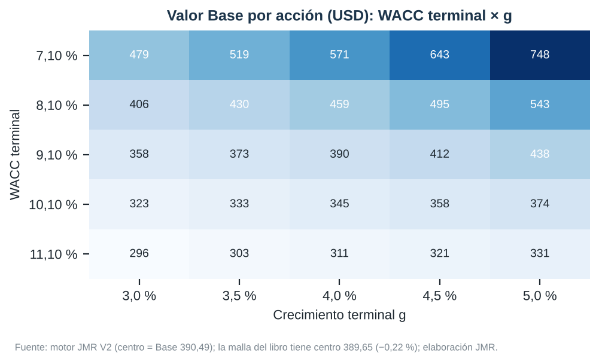

Adobe sigue creciendo 13 %, convierte 41 centavos de cada dólar de ventas en caja libre y el mercado la paga a 57 % de su valor aprobado por temor a la inteligencia artificial. ¿Cuánto del miedo ya está en el precio?
Adobe vende suscripciones con 89 % de margen bruto, USD 10.592 M de flujo de caja libre y un ARR de USD 27.500 M que crece 11 %; el mercado la valora a 12 veces la utilidad por temor a que la IA generativa erosione sus herramientas. La valoración R2, cerrada por el propietario, da USD 390,49 en el Base y el precio de USD 223,98 queda por debajo incluso del precio con margen de seguridad (USD 253,82): la pregunta es cuánta durabilidad ya descuenta el precio.
Adobe Inc. (NASDAQ: ADBE) desarrolla herramientas de creación, documentos y marketing digital que vende por suscripción: Creative & Marketing Professionals (71 % de la suscripción del 3T FY2026) y Business Professionals & Consumers (29 %). LTM al 28-ago-2026: ventas de USD 25.970 M (+13 % en el 3T), EBIT reportado de 35,7 % (40,9 % con I+D capitalizada), utilidad neta de USD 7.284 M y caja e inversiones de USD 5.639 M frente a deuda de USD 6.363 M.

Este documento es un análisis de valoración elaborado con el Modelo JMR V2.0 para uso de su propietario. No constituye asesoría de inversión, recomendación de compra o venta ni oferta de valores. Las cifras provienen de documentos públicos y de proveedores secundarios y pueden contener errores o cambiar. El valor intrínseco es una estimación sujeta a supuestos; los escenarios son historias económicas condicionales, no probabilidades ni garantías.
La revisión ADBE-V2-LTM20260828-R2 fue cerrada y auditada por decisión expresa del propietario el 24-nov-2026; esa decisión no equivale a una auditoría económica independiente de un tercero, que no existe. El estado técnico lo determinan los controles de la biblioteca: EN_REVISION, con un único control abierto, la falta de auditoría independiente (P02). Salvedades: los valores guardados en el libro de Drive (186,07 / 372,54 / 481,12) son anteriores a la corrección de la prima de riesgo y se sustituyen por el recálculo completo (193,71 / 390,49 / 504,58); cotejo primario de históricos y macro adicional pendientes. Corte de estados: LTM al 28-ago-2026; precio y tasa libre: 23-nov-2026. Contrato aplicado: JMR V2.0 v1.5.6.
La valoración es la del libro maestro ADBE-V2-LTM20260828-R1_VALORACION.xlsx (FCFF Simple Ginsu de Damodaran con fórmulas originales); este informe no la modifica: recalcula el libro completo, lo concilia con el motor JMR V2 (diferencia inferior a 10⁻¹² %) y explica sus supuestos. Los estados A-1.2 provienen de los 10-K y 10-Q de Adobe. Los tres escenarios (Conservador, Base y Optimista) comparten WACC y g; el margen de seguridad de 35 % se aplica solo al Base. Los múltiplos son diagnóstico y no se promedian con el DCF. Los datos de mercado y macro se rotulan como secundarios; lo que no pudo obtenerse se marca N/D.
¿Cuánto vale un negocio de software que cobra por suscripción, retiene a sus clientes con formatos y flujos de trabajo difíciles de abandonar y devuelve casi toda su caja con recompras, cuando el mercado teme que la inteligencia artificial generativa convierta sus herramientas en un servicio prescindible? Este informe separa dos preguntas: la calidad económica de Adobe, documentada en diez ejercicios y muy alta, y la durabilidad de su ventaja, que es lo que realmente descuenta el precio. La acción cayó 66 % en cinco años mientras las ventas crecieron 65 % entre FY2021 y el LTM: el múltiplo pasó de 60,7× la utilidad al cierre de FY2021 a unas 12×.
Tres hechos dominan. Primero, el crecimiento se mantuvo: +13 % en el 3T FY2026 y un ARR de USD 27.500 M (+11,2 %), con un ARR basado en IA que crece más de 150 %. Segundo, la dirección cambia: Anil Chakravarthy sucederá a Shantanu Narayen como CEO el 1-dic-2026, el director financiero es interino y el presidente del negocio creativo dejó el cargo el 27-sep-2026. Tercero, Adobe invirtió USD 1.870 M en Semrush (abr-2026) y anunció la compra de Topaz Labs (~USD 340 M), y redujo sus acciones diluidas de 450 M (FY2024) a 406 M con recompras de USD 9.295 M en el LTM. La tasa libre de riesgo a diez años subió de 4,14 % (dic-2025) a 4,92 % (23-nov-2026) con un máximo mensual de 5,13 % en octubre.
R2 es la revisión cerrada el 24-nov-2026 con el libro maestro ADBE-V2-LTM20260828-R1_VALORACION.xlsx, recalculado con la prima de riesgo corregida: WACC inicial de 10,91 % y terminal de 9,10 %, crecimiento terminal de 4 % y ventas sobre capital de 1,54× en el Base. El valor Base anterior de USD 372,54, calculado antes de esa corrección, no es el resultado vigente; las cifras de R2 sustituyen a las de la revisión preliminar del 16-nov (Base USD 358,86). Este informe no recalcula ni reinterpreta la valoración: explica sus supuestos y deja visibles sus límites.
Adobe se define con una misión: «empoderar a todos para crear». Construye plataformas que cubren desde «la primera chispa creativa» hasta la creación, producción y entrega personalizada del contenido por todos los canales. Su negocio económico es simple: una base muy grande de usuarios paga suscripciones mensuales o anuales, y el costo marginal de servirlos es bajo (margen bruto de 89 %, cálculo propio con el libro). El ingreso se reconoce de manera ratable durante el contrato, por lo que el ARR anticipa los ingresos.
En el primer trimestre del año fiscal 2026 Adobe fusionó sus tres segmentos anteriores (Digital Media, Digital Experience y Publishing and Advertising) en un solo segmento operativo, por «ventas unificadas e innovación integrada de productos». Hoy reporta dos grupos de clientes: Creative & Marketing Professionals (Photoshop, Lightroom, Illustrator y Premiere, más las soluciones de orquestación de experiencia del cliente: Analytics, Real-Time CDP, Experience Manager, Commerce, GenStudio, Marketo y Campaign) y Business Professionals & Consumers (Acrobat y Express, con Acrobat Studio que une Acrobat, Express y agentes de IA).
| US$ millones · 3T FY2026 | 3T FY2026 | 3T FY2025 | Crec. |
|---|---|---|---|
| Ingresos por suscripción | 6.580 | 5.789 | +14 % |
| Creative & Marketing Professionals | 4.650 | 4.120 | +13 % |
| Business Professionals & Consumers | 1.910 | 1.650 | +16 % |
| Producto | 67 | 68 | −1 % |
| Servicios y otros | 111 | 129 | −14 % |
| Total ingresos | 6.760 | 5.988 | +13 % |
Fuente: 10-Q del 3T FY2026 y comunicado del 10-sep-2026 (los grupos de clientes son los reportados; suscripción total = ingresos por suscripción).
En el trimestre, el primer grupo aportó US$4.650 millones (+13 %) y el segundo US$1.910 millones (+16 %): el segundo crece más rápido porque Acrobat y Express se benefician de asistentes de IA y de la estrategia freemium. Los ingresos por producto y servicios son marginales (3 % del total).

| Indicador | Valor | Cambio |
|---|---|---|
| ARR total (28-ago-2026) | US$27.500 M | +11,2 % |
| ARR total al cierre del año fiscal 2025 (28-nov-2025) | US$25.200 M | +11,5 % |
| ARR basado en IA («AI-first») | — | > +150 % interanual |
| Usuarios activos mensuales (creatividad y productividad) | > 1.000 millones | — |
| Obligaciones de desempeño pendientes (RPO) | US$22.160 M | cRPO: 67 % |
Fuente: 10-K FY2025, 10-Q y comunicado del 3T FY2026.
El indicador más importante es el ARR: el valor anual de los contratos de suscripción. Adobe lo mide a tipo de cambio constante fijado al inicio de cada año fiscal. Subió de US$25.200 millones al cierre del año fiscal 2025 a US$27.500 millones al 28-ago-2026, y la meta de la empresa es un crecimiento de 10,2 % al cierre de FY2026.
El 10-Q describe una estrategia de «reunir los modelos de IA propios comercialmente seguros y los mejores modelos de socios», desplegar capacidades conversacionales y agénticas en todas las ofertas y estar presente «en todas las superficies». Adobe Firefly ofrece modelos generativos comercialmente seguros (entrenados con contenido autorizado), Acrobat AI Assistant resume y analiza documentos, y GenStudio y Firefly Services conectan la creación con la ejecución de marketing. La empresa dice que su propuesta de valor es la «seguridad de marca, el cumplimiento, la protección de la propiedad intelectual y la confiabilidad». Es la diferencia que argumenta frente a las herramientas de IA generales: el mercado debe decidir si la paga.
El 28-abr-2026 Adobe completó la compra de Semrush (plataforma de visibilidad de marca) por US$1.870 millones, principalmente en efectivo, para sumar optimización para motores de búsqueda y de IA generativa a Experience Manager. El 24-jun-2026 acordó comprar Topaz Labs (modelos de mejora de video e imagen con IA) por unos US$340 millones, con cierre previsto en el cuarto trimestre del año fiscal. Ambas se pagan con caja.
Las ventas de Adobe crecieron de US$5.854 millones en FY2016 a US$23.769 millones en FY2025 (cálculo con el libro): un 16,8 % anual compuesto. El crecimiento se desaceleró de más de 20 % en FY2021 a 10–11 % en FY2024–FY2025, y en el LTM a agosto de 2026 vuelve a 13 % en el último trimestre. La desaceleración y el temor a la IA explican la caída de la acción.
El tercer trimestre del año fiscal 2026 (cerrado el 28-ago-2026) aportó ingresos de US$6.760 millones (+13 %), gastos operativos de US$3.640 millones (+15 %), resultado operativo GAAP de US$2.350 millones y no-GAAP de US$2.970 millones, utilidad neta GAAP de US$1.830 millones (US$4,62 por acción) y no-GAAP de US$2.420 millones (US$6,13 por acción), y flujo operativo de US$2.520 millones. En nueve meses los ingresos suman US$19.776 millones (+13 %). Recompró unos 9,5 millones de acciones en el trimestre. Para el cuarto trimestre la guía es de ingresos de US$6.800–6.850 millones y utilidad por acción no-GAAP de US$6,30–6,35, con margen operativo no-GAAP de ~44 %.
| Concepto | Unidad | FY 2016 | FY 2017 | FY 2018 | FY 2019 | FY 2020 | FY 2021 |
|---|---|---|---|---|---|---|---|
| Ingresos totales | USD M | 5.854 | 7.302 | 9.030 | 11.171 | 12.868 | 15.785 |
| Ingresos % variación (ƒ) | % | N/D | 24,72 % | 23,67 % | 23,71 % | 15,19 % | 22,67 % |
| Costo de ventas | USD M | 820 | 1.011 | 1.195 | 1.673 | 1.722 | 1.865 |
| Utilidad bruta (ƒ) | USD M | 5.035 | 6.291 | 7.835 | 9.499 | 11.146 | 13.920 |
| Margen bruto (ƒ) | % | 86,00 % | 86,16 % | 86,77 % | 85,03 % | 86,62 % | 88,18 % |
| Gastos de venta, generales y administrativos | USD M | 2.488 | 2.822 | 3.366 | 4.125 | 4.559 | 5.406 |
| Investigación y desarrollo | USD M | 976 | 1.224 | 1.538 | 1.930 | 2.188 | 2.540 |
| Otros gastos operativos | USD M | N/D | N/D | N/D | N/D | N/D | N/D |
| Utilidad operativa (EBIT) (ƒ) | USD M | 1.494 | 2.168 | 2.840 | 3.268 | 4.237 | 5.802 |
| Margen operativo (ƒ) | % | 25,51 % | 29,69 % | 31,46 % | 29,25 % | 32,93 % | 36,76 % |
| Ingresos por intereses e inversiones | USD M | 47 | 66 | 93 | 68 | 43 | 17 |
| Gasto por intereses | USD M | 70 | 74 | 89 | 157 | 116 | 113 |
| Utilidad antes de impuestos | USD M | 1.435 | 2.138 | 2.794 | 3.205 | 4.176 | 5.705 |
| Provisión para impuestos | USD M | 266 | 444 | 203 | 253 | -1.084 | 883 |
| Tasa efectiva de impuestos (ƒ) | % | 18,56 % | 20,76 % | 7,27 % | 7,90 % | -25,96 % | 15,48 % |
| Utilidad neta consolidada | USD M | 1.169 | 1.694 | 2.591 | 2.952 | 5.260 | 4.822 |
| Utilidad neta atribuible a accionistas comunes | USD M | 1.169 | 1.694 | 2.591 | 2.952 | 5.260 | 4.822 |
| Margen neto (ƒ) | % | 19,96 % | 23,20 % | 28,69 % | 26,42 % | 40,88 % | 30,55 % |
| EBITDA (ƒ) | USD M | 1.825 | 2.494 | 3.187 | 4.005 | 4.994 | 6.590 |
| Margen EBITDA (ƒ) | % | 31,17 % | 34,16 % | 35,29 % | 35,85 % | 38,81 % | 41,75 % |
| Acciones promedio ponderado diluidas | acciones M | 504,30 | 501,10 | 497,80 | 491,60 | 485,50 | 481,00 |
| Concepto | Unidad | FY 2022 | FY 2023 | FY 2024 | FY 2025 | LTM al 2026-08-28 |
|---|---|---|---|---|---|---|
| Ingresos totales | USD M | 17.606 | 19.409 | 21.505 | 23.769 | 25.970 |
| Ingresos % variación (ƒ) | % | 11,54 % | 10,24 % | 10,80 % | 10,53 % | N/D |
| Costo de ventas | USD M | 2.165 | 2.354 | 2.358 | 2.551 | 2.791 |
| Utilidad bruta (ƒ) | USD M | 15.441 | 17.055 | 19.147 | 21.218 | 23.179 |
| Margen bruto (ƒ) | % | 87,70 % | 87,87 % | 89,04 % | 89,27 % | 89,25 % |
| Gastos de venta, generales y administrativos | USD M | 6.187 | 6.764 | 7.293 | 8.061 | 9.065 |
| Investigación y desarrollo | USD M | 2.987 | 3.473 | 3.944 | 4.294 | 4.694 |
| Otros gastos operativos | USD M | N/D | 0 | 1.000 | 0 | 0 |
| Utilidad operativa (EBIT) (ƒ) | USD M | 6.098 | 6.650 | 6.741 | 8.706 | 9.271 |
| Margen operativo (ƒ) | % | 34,64 % | 34,26 % | 31,35 % | 36,63 % | 35,70 % |
| Ingresos por intereses e inversiones | USD M | 61 | 16 | 48 | 43 | 56 |
| Gasto por intereses | USD M | 112 | 113 | 169 | 263 | 260 |
| Utilidad antes de impuestos | USD M | 6.008 | 6.799 | 6.931 | 8.734 | 9.281 |
| Provisión para impuestos | USD M | 1.252 | 1.371 | 1.371 | 1.604 | 1.997 |
| Tasa efectiva de impuestos (ƒ) | % | 20,84 % | 20,16 % | 19,78 % | 18,37 % | 21,52 % |
| Utilidad neta consolidada | USD M | 4.756 | 5.428 | 5.560 | 7.130 | 7.284 |
| Utilidad neta atribuible a accionistas comunes | USD M | 4.756 | 5.428 | 5.560 | 7.130 | 7.284 |
| Margen neto (ƒ) | % | 27,01 % | 27,97 % | 25,85 % | 30,00 % | 28,05 % |
| EBITDA (ƒ) | USD M | 6.954 | 7.522 | 7.598 | 9.524 | 10.037 |
| Margen EBITDA (ƒ) | % | 39,50 % | 38,76 % | 35,33 % | 40,07 % | 38,65 % |
| Acciones promedio ponderado diluidas | acciones M | 470,90 | 459,10 | 449,70 | 427,00 | 406,50 |
Fuente: estados financieros A-1.2 del expediente vigente; importes en millones de USD. ƒ = calculado con fórmula; N/D = no disponible o no calculable. CAPEX y otras salidas conservan la convención de signos de A-1.2.
El margen bruto es muy alto y estable (88–90 %), porque casi todo el ingreso es suscripción de software. El margen operativo del libro (GAAP, incluye compensación en acciones) subió de 31,3 % en FY2024 a 36,6 % en FY2025 y 35,7 % en el LTM; el no-GAAP es de ~45 %. La diferencia entre ambos (unos 9 puntos) es sobre todo la compensación en acciones y la amortización de intangibles. El gasto en I+D es de US$4.694 millones (18 % de las ventas).
| Concepto | Unidad | FY 2016 | FY 2017 | FY 2018 | FY 2019 | FY 2020 | FY 2021 |
|---|---|---|---|---|---|---|---|
| Efectivo y equivalentes | USD M | 1.011 | 2.306 | 1.643 | 2.650 | 4.478 | 3.844 |
| Inversiones de corto plazo | USD M | 3.750 | 3.514 | 1.586 | 1.527 | 1.514 | 1.954 |
| Efectivo total e inversiones de corto plazo (ƒ) | USD M | 4.761 | 5.820 | 3.229 | 4.177 | 5.992 | 5.798 |
| Cuentas por cobrar comerciales totales (ƒ) | USD M | 833 | 1.218 | 1.316 | 1.535 | 1.398 | 1.878 |
| Inventarios | USD M | 0 | 0 | 0 | 0 | 0 | 0 |
| Activos corrientes totales (ƒ) | USD M | 5.840 | 7.248 | 4.857 | 6.495 | 8.146 | 8.669 |
| Propiedades, planta y equipo netos | USD M | 816 | 937 | 1.075 | 1.293 | 1.517 | 1.673 |
| Intangibles netos | USD M | 414 | 386 | 2.069 | 1.721 | 1.359 | 1.820 |
| Crédito mercantil (goodwill) | USD M | 5.407 | 5.822 | 10.581 | 10.691 | 10.742 | 12.668 |
| Activos totales (ƒ) | USD M | 12.707 | 14.536 | 18.769 | 20.762 | 24.284 | 27.241 |
| Cuentas por pagar | USD M | 88 | 114 | 186 | 210 | 306 | 312 |
| Pasivos corrientes totales (ƒ) | USD M | 2.812 | 3.528 | 4.301 | 8.191 | 5.512 | 6.932 |
| Deuda de corto plazo | USD M | 0 | 0 | 0 | 3.149 | 0 | 0 |
| Deuda de largo plazo | USD M | 1.902 | 1.881 | 4.125 | 989 | 4.117 | 4.123 |
| Porción corriente de arrendamientos | USD M | 0 | 0 | 0 | N/D | N/D | N/D |
| Arrendamientos (largo plazo) | USD M | 0 | 0 | 0 | N/D | N/D | N/D |
| Pasivos totales (ƒ) | USD M | 5.282 | 6.076 | 9.407 | 10.232 | 11.020 | 12.444 |
| Patrimonio de accionistas comunes | USD M | 7.425 | 8.460 | 9.362 | 10.530 | 13.264 | 14.797 |
| Patrimonio total (ƒ) | USD M | 7.425 | 8.460 | 9.362 | 10.530 | 13.264 | 14.797 |
| Deuda total (corto + largo + arrendamientos) (ƒ) | USD M | 1.902 | 1.881 | 4.125 | 4.138 | 4.117 | 4.123 |
| Deuda neta (ƒ) | USD M | -2.859 | -3.938 | 896 | -39 | -1.875 | -1.675 |
| Concepto | Unidad | FY 2022 | FY 2023 | FY 2024 | FY 2025 | LTM al 2026-08-28 |
|---|---|---|---|---|---|---|
| Efectivo y equivalentes | USD M | 4.236 | 7.141 | 7.613 | 5.431 | 4.359 |
| Inversiones de corto plazo | USD M | 1.860 | 701 | 273 | 1.164 | 1.280 |
| Efectivo total e inversiones de corto plazo (ƒ) | USD M | 6.096 | 7.842 | 7.886 | 6.595 | 5.639 |
| Cuentas por cobrar comerciales totales (ƒ) | USD M | 2.065 | 2.224 | 2.072 | 2.344 | 2.081 |
| Inventarios | USD M | 0 | 0 | 0 | 0 | 0 |
| Activos corrientes totales (ƒ) | USD M | 8.996 | 11.084 | 11.232 | 10.163 | 9.158 |
| Propiedades, planta y equipo netos | USD M | 1.908 | 2.030 | 1.936 | 1.873 | 1.870 |
| Intangibles netos | USD M | 1.449 | 1.088 | 782 | 495 | 956 |
| Crédito mercantil (goodwill) | USD M | 12.787 | 12.805 | 12.788 | 12.857 | 14.037 |
| Activos totales (ƒ) | USD M | 27.165 | 29.779 | 30.230 | 29.496 | 29.981 |
| Cuentas por pagar | USD M | 379 | 314 | 361 | 417 | 529 |
| Pasivos corrientes totales (ƒ) | USD M | 8.128 | 8.251 | 10.521 | 10.200 | 11.888 |
| Deuda de corto plazo | USD M | 500 | 0 | 1.499 | 0 | 1.597 |
| Deuda de largo plazo | USD M | 3.629 | 3.634 | 4.129 | 6.210 | 4.766 |
| Porción corriente de arrendamientos | USD M | N/D | N/D | 75 | 77 | 89 |
| Arrendamientos (largo plazo) | USD M | N/D | N/D | 353 | 361 | 310 |
| Pasivos totales (ƒ) | USD M | 13.114 | 13.261 | 16.125 | 17.873 | 18.217 |
| Patrimonio de accionistas comunes | USD M | 14.051 | 16.518 | 14.105 | 11.623 | 11.764 |
| Patrimonio total (ƒ) | USD M | 14.051 | 16.518 | 14.105 | 11.623 | 11.764 |
| Deuda total (corto + largo + arrendamientos) (ƒ) | USD M | 4.129 | 3.634 | 5.628 | 6.210 | 6.363 |
| Deuda neta (ƒ) | USD M | -1.967 | -4.208 | -2.258 | -385 | 724 |
Fuente: estados financieros A-1.2 del expediente vigente; importes en millones de USD. ƒ = calculado con fórmula; N/D = no disponible o no calculable. CAPEX y otras salidas conservan la convención de signos de A-1.2.
| Concepto | Unidad | FY 2016 | FY 2017 | FY 2018 | FY 2019 | FY 2020 | FY 2021 |
|---|---|---|---|---|---|---|---|
| Utilidad neta | USD M | 1.169 | 1.694 | 2.591 | 2.952 | 5.260 | 4.822 |
| Depreciación y amortización | USD M | 332 | 326 | 347 | 737 | 757 | 788 |
| Compensación basada en acciones | USD M | 350 | 452 | 610 | 788 | 909 | 1.069 |
| Flujo de efectivo operativo (ƒ) | USD M | 2.200 | 2.913 | 4.029 | 4.422 | 5.727 | 7.230 |
| Inversiones de capital (CAPEX) | USD M | -204 | -178 | -267 | -395 | -419 | -348 |
| Flujo de efectivo de inversión (ƒ) | USD M | -960 | -443 | -4.685 | -456 | -414 | -3.537 |
| Flujo de efectivo de financiación (ƒ) | USD M | -1.091 | -1.184 | -6 | -2.946 | -3.488 | -4.301 |
| Recompras de acciones comunes | USD M | -1.075 | -1.100 | -2.050 | -2.750 | -3.050 | -3.950 |
| Dividendos pagados a accionistas comunes | USD M | 0 | 0 | 0 | 0 | 0 | 0 |
| Flujo de caja libre (CFO − CAPEX) (ƒ) | USD M | 1.996 | 2.735 | 3.763 | 4.027 | 5.308 | 6.882 |
| Margen de flujo libre (ƒ) | % | 34,09 % | 37,46 % | 41,67 % | 36,05 % | 41,25 % | 43,60 % |
| Cambio neto en efectivo (ƒ) | USD M | N/D | 1.295 | -663 | 1.007 | 1.828 | -634 |
| Concepto | Unidad | FY 2022 | FY 2023 | FY 2024 | FY 2025 | LTM al 2026-08-28 |
|---|---|---|---|---|---|---|
| Utilidad neta | USD M | 4.756 | 5.428 | 5.560 | 7.130 | 7.284 |
| Depreciación y amortización | USD M | 856 | 872 | 857 | 818 | 766 |
| Compensación basada en acciones | USD M | 1.440 | 1.718 | 1.833 | 1.942 | 2.071 |
| Flujo de efectivo operativo (ƒ) | USD M | 7.838 | 7.302 | 8.056 | 10.031 | 10.806 |
| Inversiones de capital (CAPEX) | USD M | -442 | -360 | -183 | -179 | -214 |
| Flujo de efectivo de inversión (ƒ) | USD M | -570 | 776 | 149 | -1.187 | -2.054 |
| Flujo de efectivo de financiación (ƒ) | USD M | -6.825 | -5.182 | -7.724 | -11.060 | -9.369 |
| Recompras de acciones comunes | USD M | -6.550 | -4.400 | -9.500 | -11.281 | -9.295 |
| Dividendos pagados a accionistas comunes | USD M | 0 | 0 | 0 | 0 | 0 |
| Flujo de caja libre (CFO − CAPEX) (ƒ) | USD M | 7.396 | 6.942 | 7.873 | 9.852 | 10.592 |
| Margen de flujo libre (ƒ) | % | 42,01 % | 35,77 % | 36,61 % | 41,45 % | 40,79 % |
| Cambio neto en efectivo (ƒ) | USD M | 392 | 2.905 | 472 | -2.182 | N/D |
Fuente: estados financieros A-1.2 del expediente vigente; importes en millones de USD. ƒ = calculado con fórmula; N/D = no disponible o no calculable. CAPEX y otras salidas conservan la convención de signos de A-1.2.
Adobe tiene poca caja y poca deuda: US$4.359 millones en efectivo y US$1.280 millones en inversiones a corto plazo al 28-ago-2026, frente a US$6.363 millones de deuda en el libro; el capital de trabajo es negativo (−US$2.730 millones) por el diferimiento de ingresos de suscripciones. El patrimonio es de US$11.764 millones. Dispone de una línea de crédito revolvente de US$1.500 millones. En nueve meses el efectivo usado en financiación fue de US$6.810 millones, sobre todo en recompras.
El flujo operativo del LTM es de US$10.806 millones y el capex, de solo US$214 millones; el flujo libre es de ~US$10.592 millones (41 % de las ventas, cálculo propio). La empresa devolvió ~US$9.295 millones en el LTM, casi el 90 % del flujo libre, y desembolsó US$1.870 millones en Semrush.

| Concepto | Unidad | FY 2016 | FY 2017 | FY 2018 | FY 2019 | FY 2020 | FY 2021 |
|---|---|---|---|---|---|---|---|
| Margen bruto (ƒ) | % | 86,00 % | 86,16 % | 86,77 % | 85,03 % | 86,62 % | 88,18 % |
| Margen operativo (ƒ) | % | 25,51 % | 29,69 % | 31,46 % | 29,25 % | 32,93 % | 36,76 % |
| Margen EBITDA (ƒ) | % | 31,17 % | 34,16 % | 35,29 % | 35,85 % | 38,81 % | 41,75 % |
| Margen neto (ƒ) | % | 19,96 % | 23,20 % | 28,69 % | 26,42 % | 40,88 % | 30,55 % |
| Margen de flujo libre (ƒ) | % | 34,09 % | 37,46 % | 41,67 % | 36,05 % | 41,25 % | 43,60 % |
| ROIC (NOPAT / capital invertido promedio) (ƒ) | % | N/D | 37,81 % | 35,64 % | 29,01 % | 48,78 % | 40,01 % |
| ROE (utilidad neta / patrimonio promedio) (ƒ) | % | N/D | 21,33 % | 29,07 % | 29,67 % | 44,21 % | 34,37 % |
| ROA (utilidad neta / activos promedio) (ƒ) | % | N/D | 12,44 % | 15,56 % | 14,93 % | 23,35 % | 18,72 % |
| Rotación de activos (ƒ) | × | N/D | 0,54× | 0,54× | 0,57× | 0,57× | 0,61× |
| Días de ventas por cobrar (DSO) (ƒ) | días | N/D | 51,3 | 51,2 | 46,6 | 41,6 | 37,9 |
| Días de inventario (DIO) (ƒ) | días | N/D | N/D | N/D | N/D | N/D | N/D |
| Días de cuentas por pagar (DPO) (ƒ) | días | N/D | 36,4 | 45,8 | 43,2 | 54,6 | 60,5 |
| Ciclo de conversión de efectivo (ƒ) | días | N/D | N/D | N/D | N/D | N/D | N/D |
| Razón corriente (ƒ) | × | 2,08× | 2,05× | 1,13× | 0,79× | 1,48× | 1,25× |
| Deuda neta / EBITDA (ƒ) | × | -1,57× | -1,58× | 0,28× | -0,01× | -0,38× | -0,25× |
| EBIT / gasto por intereses (ƒ) | × | 21,22× | 29,14× | 31,84× | 20,79× | 36,53× | 51,35× |
| Deuda / patrimonio (ƒ) | × | 0,26× | 0,22× | 0,44× | 0,39× | 0,31× | 0,28× |
| Flujo operativo / deuda (ƒ) | × | 1,16× | 1,55× | 0,98× | 1,07× | 1,39× | 1,75× |
| BPA diluido (ƒ) | USD/acción | 2,32 | 3,38 | 5,20 | 6,00 | 10,83 | 10,02 |
| Valor en libros por acción (ƒ) | USD/acción | 15,02 | 17,22 | 19,20 | 21,83 | 27,69 | 31,15 |
| Flujo libre por acción (ƒ) | USD/acción | 3,96 | 5,46 | 7,56 | 8,19 | 10,93 | 14,31 |
| P/E (ƒ) | × | N/D | N/D | N/D | N/D | N/D | 60,73× |
| EV/EBITDA (ƒ) | × | N/D | N/D | N/D | N/D | N/D | 44,18× |
| P/FCF (ƒ) | × | N/D | N/D | N/D | N/D | N/D | 42,55× |
| Rendimiento FCF (ƒ) | % | N/D | N/D | N/D | N/D | N/D | 2,35 % |
| Concepto | Unidad | FY 2022 | FY 2023 | FY 2024 | FY 2025 | LTM al 2026-08-28 |
|---|---|---|---|---|---|---|
| Margen bruto (ƒ) | % | 87,70 % | 87,87 % | 89,04 % | 89,27 % | 89,25 % |
| Margen operativo (ƒ) | % | 34,64 % | 34,26 % | 31,35 % | 36,63 % | 35,70 % |
| Margen EBITDA (ƒ) | % | 39,50 % | 38,76 % | 35,33 % | 40,07 % | 38,65 % |
| Margen neto (ƒ) | % | 27,01 % | 27,97 % | 25,85 % | 30,00 % | 28,05 % |
| Margen de flujo libre (ƒ) | % | 42,01 % | 35,77 % | 36,61 % | 41,45 % | 40,79 % |
| ROIC (NOPAT / capital invertido promedio) (ƒ) | % | 38,30 % | 43,53 % | 44,77 % | 61,57 % | N/D |
| ROE (utilidad neta / patrimonio promedio) (ƒ) | % | 32,97 % | 35,51 % | 36,31 % | 55,43 % | N/D |
| ROA (utilidad neta / activos promedio) (ƒ) | % | 17,48 % | 19,06 % | 18,53 % | 23,88 % | N/D |
| Rotación de activos (ƒ) | × | 0,65× | 0,68× | 0,72× | 0,80× | N/D |
| Días de ventas por cobrar (DSO) (ƒ) | días | 40,9 | 40,3 | 36,5 | 33,9 | N/D |
| Días de inventario (DIO) (ƒ) | días | N/D | N/D | N/D | N/D | N/D |
| Días de cuentas por pagar (DPO) (ƒ) | días | 58,2 | 53,7 | 52,2 | 55,7 | N/D |
| Ciclo de conversión de efectivo (ƒ) | días | N/D | N/D | N/D | N/D | N/D |
| Razón corriente (ƒ) | × | 1,11× | 1,34× | 1,07× | 1,00× | 0,77× |
| Deuda neta / EBITDA (ƒ) | × | -0,28× | -0,56× | -0,30× | -0,04× | 0,07× |
| EBIT / gasto por intereses (ƒ) | × | 54,45× | 58,85× | 39,89× | 33,10× | 35,66× |
| Deuda / patrimonio (ƒ) | × | 0,29× | 0,22× | 0,40× | 0,53× | 0,54× |
| Flujo operativo / deuda (ƒ) | × | 1,90× | 2,01× | 1,43× | 1,62× | 1,70× |
| BPA diluido (ƒ) | USD/acción | 10,10 | 11,82 | 12,36 | 16,70 | 17,92 |
| Valor en libros por acción (ƒ) | USD/acción | 30,41 | 36,30 | 31,98 | 28,14 | 30,09 |
| Flujo libre por acción (ƒ) | USD/acción | 15,71 | 15,12 | 17,51 | 23,07 | 26,06 |
| P/E (ƒ) | × | 33,18× | 51,34× | 40,92× | 18,54× | 12,02× |
| EV/EBITDA (ƒ) | × | 22,41× | 36,49× | 29,65× | 13,84× | 8,80× |
| P/FCF (ƒ) | × | 21,33× | 40,14× | 28,90× | 13,42× | 8,27× |
| Rendimiento FCF (ƒ) | % | 4,69 % | 2,49 % | 3,46 % | 7,45 % | 12,09 % |
Fuente: estados A-1.2 del expediente y del libro de la revisión vigente; ƒ = calculado con fórmula; N/D = no disponible o no calculable. Los múltiplos históricos usan el precio de cierre de cada ejercicio fiscal y son diagnóstico, no parte del DCF. El ROE y el ROIC contables están inflados por el bajo capital contable tras años de recompras.
El patrimonio contable es pequeño frente a la utilidad por las recompras, de modo que el ROE (55 % en FY2025) no es informativo. La métrica relevante es la eficiencia del capital: el modelo supone ventas/capital de 1,54× en el Base y ROIC terminal de 18 %. Las acciones en circulación bajaron de 455 millones (FY2023) a 401 millones (LTM), un 12 % en tres años.

El EBIT reportado del LTM es USD 9.271 M (35,7 %). El modelo lo ajusta de una sola manera material: capitaliza la I+D a cinco años con cohortes LTM de agosto (2.441 a 4.694), lo que suma USD 1.354,4 M y lleva el EBIT ajustado a USD 10.625,4 M (40,9 %); la compensación en acciones (USD 2.071 M, 8,0 % de las ventas) y los arrendamientos operativos (USD 399 M de pasivo) permanecen en el gasto. La tasa efectiva LTM es 21,5 %, inferior a la marginal de 25 % a la que converge el modelo. La generación de caja (flujo operativo de USD 10.806 M, 1,48× la utilidad neta) confirma que los resultados no dependen de partidas contables. La deuda neta de los cuadros A-1.2 (USD 724 M) es deuda financiera menos caja e inversiones corrientes, sin los arrendamientos operativos; el negocio opera con capital de trabajo negativo por los ingresos diferidos (USD 7.094 M).
El 2 de septiembre de 2026 el consejo nombró a Anil Chakravarthy, hasta ahora presidente del negocio de orquestación de la experiencia del cliente, presidente y CEO y miembro del consejo desde el 1 de diciembre de 2026. Shantanu Narayen, presidente del consejo y CEO, dejará la dirección ejecutiva y será presidente ejecutivo (8-K del 8-sep-2026). Narayen dijo, al presentar los resultados, que tiene «confianza» en que Anil construirá sobre el impulso actual en la era de la IA. El mismo día se informó de que David Wadhwani, presidente del negocio de creatividad y productividad, deja el cargo el 27 de septiembre y permanecerá como asesor, y el comunicado de resultados presenta a Steve Day como vicepresidente senior y director financiero interino (el proxy de FY2025 listaba a Dan Durn como director financiero; los documentos revisados no explican el cambio, N/D).
Para un inversionista hay un riesgo de transición: cambio de CEO, de director financiero y de líder del negocio creativo en tres meses, justo cuando la IA obliga a repensar el producto. La continuidad se apoya en que el sucesor es un directivo interno que ya dirigía un negocio relevante y en que el CEO saliente se mantiene como presidente ejecutivo.
Según el proxy de 2026 (presentado el 27-feb-2026), la retribución total de Narayen en FY2025 fue de US$51,2 millones (salario de US$1,5 millones, acciones por US$45,4 millones e incentivo de US$3,1 millones), frente a US$52,4 millones en FY2024. El comité de compensación está formado en 100 % por consejeros independientes.
| US$ millones | FY2023 | FY2024 | FY2025 | LTM ago-26 |
|---|---|---|---|---|
| Recompras + dividendos (libro) | 4.400 | 9.500 | 11.281 | 9.295 |
| Acciones (M) | 455 | 441 | 413 | 401,4 |
| Compensación en acciones | 1.718 | 1.833 | 1.942 | 2.071 |
Fuente: libro JMR V2 (10-K y 10-Q).
Adobe ha cambiado de un programa de recompras moderado a uno de más de US$9.000 millones al año, que reduce las acciones cerca de 3–4 % anual. No paga dividendo. La política declarada es usar el exceso de caja para recomprar acciones y adquirir tecnología complementaria. A US$223,98 por acción y 12,5 veces el BPA diluido, esas recompras son muy acretivas si el negocio sostiene su flujo: con un rendimiento de flujo libre de 11,8 %, cada dólar recomprado compra una fracción relevante del negocio.
El 10-K detalla un proceso del Departamento de Justicia de EE. UU. (denuncia presentada el 17-jun-2024 tras una investigación de la FTC desde 2022) por supuesta falta de divulgación clara de los términos de las suscripciones y de sus costos de cancelación bajo la ley ROSCA; Adobe y ciertos empleados son demandados. El desenlace (multas, compromisos de cambios en prácticas de cancelación) no está cuantificado en los documentos revisados (N/D).
| Aspecto | Dato | Fuente |
|---|---|---|
| CEO y presidente | Shantanu Narayen (CEO y presidente del consejo) | Proxy 2026 |
| Retribución total del CEO | 51,2 M en FY2025 (objetivo de ~97 % en riesgo y ~70 % por desempeño) | Proxy 2026 |
| Razón con el empleado mediano | 217 a 1 (mediana de 235.989) | Proxy 2026 |
| Voto «say on pay» 2025 | Aprox. 80 % a favor | Proxy 2026 |
| Propiedad | Vanguard 10,17 %; BlackRock 9,31 %; Narayen 438.975 acciones (<1 %) | Tabla de propiedad |
| Gobierno | Si el presidente es el CEO, los independientes eligen un director líder | Pautas de gobierno |
Fuente: declaración de poder (DEF 14A) más reciente y 10-K; cifras en US$ salvo indicación. N/D = no encontrado en los documentos revisados.
Adobe tiene un plan de sucesión de corto plazo para ausencias inesperadas de la alta dirección; la sucesión planificada de largo plazo no se detalla en el proxy (N/D).
El 10-K describe un entorno «altamente competitivo y de rápida evolución»: compiten empresas grandes y pequeñas, públicas y privadas, nuevos participantes y empresas «nativas de IA o de la nube». Los competidores incluyen empresas de software, de IA, fabricantes de hardware, desarrolladores de sistemas operativos y redes sociales. Los mercados se caracterizan por rápida innovación, estándares nuevos, «barreras de entrada limitadas», ciclos cortos de producto y sensibilidad al precio.
Por segmento: para profesionales de negocio y consumidores compiten plataformas de productividad generales, plataformas de diseño web y móvil, aplicaciones de creación fáciles de usar y herramientas de IA nativa de creatividad y productividad, presentaciones y redes sociales con edición integrada; para creadores y creativos, herramientas profesionales de imagen, video, diseño y 3D tanto establecidas como emergentes. No se nombran empresas y la cuota es N/D.
| Fortalezas | Debilidades |
|---|---|
| Suscripciones recurrentes: ARR de US$27.500 M; margen bruto de 89 %; flujo libre de 41 % de las ventas | Poca caja (US$5.639 M) y capital de trabajo negativo; dependencia de suscripciones de pocas aplicaciones |
| Estándares y flujos de trabajo integrados; Firefly comercialmente seguro | Cambio de CEO, director financiero interino y salida del líder del negocio creativo |
| Recompras de ~US$9.300 M anuales que reducen las acciones 3–4 % al año | Compensación en acciones de 8 % de las ventas; gasto de I+D creciente |
| Oportunidades | Amenazas |
| ARR basado en IA creciendo más de 150 %; 1.000 millones de usuarios activos mensuales; freemium para ampliar la base | Herramientas de IA generales y nativas que sustituyen aplicaciones de creación; barreras de entrada bajas |
| Semrush y Topaz amplían marketing y modelos de IA | Proceso del DOJ por prácticas de suscripción y cancelación (ROSCA); sensibilidad de precio de los clientes |
Fuente: 10-K y 10-Q; síntesis del autor.
No hay una cifra oficial comparable de cuota en herramientas creativas, productividad documental o marketing. Se marca N/D.
| Capa | Qué protege | Qué observar |
|---|---|---|
| Formatos y archivos | El cliente evita migrar bibliotecas de contenido y rehacer procesos | Los competidores leen, editan y exportan archivos con menos fricción |
| Flujo de trabajo | Una suite reduce transferencias entre autoría, aprobación y publicación | La colaboración y publicación empiezan fuera de Adobe |
| Organización empresarial | Seguridad, licencias y formación elevan el costo de reemplazar toda la plataforma | Las empresas adoptan herramientas rivales en un grupo y las amplían sin integración adicional |
| Distribución | Las relaciones con clientes reducen el costo de vender funciones nuevas | La captación de nuevos diseñadores pasa a herramientas de navegador y móvil |
La capacidad de generar imágenes por sí sola tiene barreras de entrada menores que un proceso profesional documentado. El retorno del capital marginal depende de convertir el uso de IA en mejoras de renovación, consumo o precio dentro de ese proceso.
Adobe está en transición de crecimiento alto a madurez: ventas de USD 25.970 M, crecimiento de +24,7 % en FY2017, +22,7 % en FY2021 y +10,2–10,8 % entre FY2023 y FY2025, con margen operativo reportado de 35,7 % y EBIT ajustado de 40,9 %. La reinversión es baja (capex de USD 214 M, 0,8 % de las ventas; ventas/capital de 1,54× en el Base) y el ROIC contable de FY2025 fue 61,6 %, inflado por el reducido capital contable tras años de recompras. El Base asume que el crecimiento se mantiene en 11 % el primer año y 10 % anual hasta el año 5, con un margen que baja de 40 % a 38 % por la inversión en IA; el Conservador lo reduce a 7 % y 3 %, con margen de 28 %.
El canal hacia los escenarios es explícito: el ARR y las renovaciones fijan el crecimiento del año 1 (7 %, 11 % y 12 %); la competencia de IA fija el crecimiento de los años 2–5 (3 %, 10 % y 12 %); el costo de ofrecer IA y la compensación en acciones (8 % de las ventas) determinan el margen objetivo (28 %, 38 % y 43 %).
La variable macro que entra directamente en el modelo es el rendimiento del Tesoro a diez años, que fija la tasa libre (4,92 % al corte) y, por construcción del libro, el WACC terminal (tasa libre más prima madura de 4,18 % = 9,10 %). Su trayectoria en 2026:
| Fecha | Rendimiento Tesoro 10 años (%) |
|---|---|
| Dic-2025 | 4,14 |
| Mar-2026 | 4,25 |
| Jun-2026 | 4,47 |
| Sep-2026 | 4,99 |
| Oct-2026 | 5,13 |
| 23-nov-2026 (corte) | 4,92 |
Fuente: Alpha Vantage (serie mensual del Tesoro a diez años, promedio mensual) y Tesoro de EE. UU. para el corte del 23-nov-2026.
Cada punto porcentual de WACC inicial adicional reduce el Base a USD 369,49 (−5,4 %) según el motor, y cada punto de WACC terminal, a USD 344,55 (−11,8 %), porque el valor terminal pesa 61,6 % del valor de las operaciones. Otras variables macro (tasa de política monetaria, inflación al consumidor, desempleo y diferenciales de crédito) no pudieron obtenerse de la fuente consultada por límite de consultas del proveedor: se registran como N/D y no se infiere su valor. Por geografía, 59 % de los ingresos LTM provienen de Norteamérica, 27 % de EMEA y 14 % de Asia, de modo que las divisas pesan sobre más de 40 % de las ventas. El gasto de los clientes de marketing y de las empresas en software es la transmisión macro más directa hacia Adobe.
El péndulo de sentimiento se observa en el múltiplo. El precio/utilidad al cierre de cada ejercicio fiscal con precio disponible fue:
| FY2021 | FY2022 | FY2023 | FY2024 | FY2025 | Corte 23-nov-2026 |
|---|---|---|---|---|---|
| 60,7× | 33,2× | 51,3× | 40,9× | 18,5× | 12,0× |
Fuente: libro R2 (hoja «Trailing Valuation») con precios de cierre FMP al último día de cada ejercicio fiscal; sin precios anteriores a nov-2021: N/D; elaboración JMR.
Con el cierre del 23-nov-2026 el múltiplo es 12,5× el BPA diluido calculado de USD 17,92 (utilidad neta LTM sobre acciones diluidas promedio) y el rendimiento del flujo de caja libre es 11,8 %, frente a un Tesoro de 4,92 %. Entre el cierre de FY2021 (USD 616,53) y hoy el precio cayó 64 %, mientras el BPA diluido calculado subió 79 % (de USD 10,03 a 17,92): toda la caída del precio es compresión del múltiplo. La posición en el ciclo es la opuesta a la de una acción cara: el sentimiento es de pesimismo sobre un negocio cuya caja sigue creciendo. Que el pesimismo esté justificado depende de la IA, no del ciclo del consumidor.
| Ciclo | Señal observable | Dónde entra | Lectura actual |
|---|---|---|---|
| Empresa | ARR total y ARR de IA | Crecimiento años 1–5 | ARR USD 27.500 M (+11,2 %); ARR de IA > +150 % |
| Empresa | Margen no-GAAP y costo de inferencia | Margen EBIT objetivo | ~45 % no-GAAP; 40,9 % ajustado por I+D |
| Macro | Tesoro a 10 años | Tasa libre, WACC terminal | 4,92 %; máximo mensual 5,13 % en oct-2026 |
| Macro | Gasto en marketing y presupuestos de empresas | Crecimiento y capital de trabajo | Orquestación de experiencia (Creative & Marketing) +13 % en el 3T |
| Mercado | Múltiplo P/U y rendimiento del FCF | Contraste, no entra en el DCF | 12,5× y 11,8 % |
| Mercado | Recompras y calificación crediticia | Costo de deuda (5,62 %) | A1/A+; recompras de USD 9.295 M en el LTM |
La tabla ordena los riesgos por su efecto potencial sobre el flujo de caja y el valor. La gravedad es un juicio del autor, no una cifra oficial.
| Riesgo | Gravedad | Evidencia (fuente oficial) | Cómo se materializa |
|---|---|---|---|
| Reemplazo por IA generativa | Alta | 10-K: competidores «nativos de IA»; barreras de entrada limitadas; precio como factor de competencia | Menor demanda de herramientas profesionales; presión de precios |
| Transición de dirección | Media-alta | Nuevo CEO desde el 1-dic-2026; CFO interino; salida del presidente del negocio de creatividad (27-sep-2026) | Cambios de estrategia o de ejecución en un momento clave |
| Prácticas de suscripción y regulación | Media | Denuncia del DOJ (jun-2024) por divulgación de términos y cancelación (ROSCA); resultado N/D | Multas o cambios que reduzcan retención y precios |
| Sensibilidad de precios y freemium | Media | Estrategia freemium para ampliar la base; competidores gratuitos | Canibalización de suscripciones de pago |
| Integración de adquisiciones | Media-baja | Semrush (US$1.870 M) y Topaz (~US$340 M) | Retorno inferior al esperado |
| Marketing y presupuestos de empresas | Media | Orquestación de la experiencia del cliente depende del gasto en marketing | Ciclicidad del gasto |
| Concentración de valor en el terminal | Media | 61,6 % del valor operativo Base está en el valor terminal | Dependencia del largo plazo |
La secuencia de riesgo relevante es: (1) herramientas de IA generales mejoran hasta ser «suficientemente buenas» para la mayoría de usuarios de Express y Acrobat; (2) Adobe responde con freemium y la base de pago se reduce o el precio por usuario cae; (3) el crecimiento del ARR baja de 11 % a un dígito bajo; (4) el nuevo equipo directivo reorganiza producto y estrategia mientras el mercado revalora el múltiplo. Nada de esto requiere un colapso: basta una erosión gradual de precio y retención.
En contra: el ARR de IA crece más de 150 %, el grupo de consumidores crece 16 %, 1.000 millones de usuarios activos mensuales, flujo libre de 41 % de las ventas y un precio que descuenta ventas en contracción (capítulos 9 y 11).
| Señal observada | Prueba que distingue el riesgo | Supuesto expuesto |
|---|---|---|
| Ingresos crecen por precio con altas más débiles | Descomponer aumentos en precio, unidades y mezcla cuando Adobe los publique | Crecimiento del tramo 2–5 |
| Uso de generación crece sin expansión equivalente de ventas | Contrastar ARR, mezcla de planes y costo de servir las tareas | Margen y ventas/capital |
| Clientes empresariales aplazan renovaciones o ampliaciones | Comparar contratos comprometidos y cobros anticipados entre cortes equivalentes | Margen y capital de trabajo |
| Compras elevan D&A y goodwill más que el ingreso incremental | Medir crecimiento orgánico, integración y flujo neto de compras | Retorno terminal y reinversión |
La recurrencia es una protección frente a caídas rápidas, pero los ingresos diferidos pueden hacer que los cambios de ventas contratadas tarden en verse en el estado de resultados. El contraste debe leer el ritmo de renovaciones, el pasivo por ingresos diferidos y la generación de caja conjuntamente.
| Nivel | Qué ocurre | Efecto en el valor | Evidencia observable |
|---|---|---|---|
| Corrección | El precio converge hacia el valor sin que el negocio cambie | El Base de 390,49 queda 74 % sobre el precio; el precio con MOS (253,82) también | P/U de 12× frente a 60,7× en FY2021; ARR +11 % |
| Deterioro | Precio por usuario, retención y márgenes bajan de forma persistente | Conservador: 193,71 (−13,5 % frente al precio, −50 % frente al Base) | ARR de un dígito bajo; margen no-GAAP bajo 40 %; suscriptores netos negativos |
| Ruptura | La IA sustituye la plataforma o regulación de cancelaciones destruye la retención | Fuera del rango de los tres escenarios: no se modela como oficial | Caída del ARR; pérdida de formatos y estándares (PDF, PSD) |
| Ruta | Mecanismo | Señal de alerta | Mitigante |
|---|---|---|---|
| Sustitución por IA generativa | Herramientas de IA nativas y gratuitas cubren la mayoría de usos de Express y Acrobat; el valor se desplaza al modelo | Crecimiento del ARR por debajo de 8 %; menos altas netas de Express | Firefly «comercialmente seguro», integración en flujos y formatos propios |
| Presión de precios y freemium | La estrategia freemium reduce el ARPU o canibaliza suscripciones de pago | ARPU plano o descendente; planes gratuitos creciendo más que los de pago | Mayor consumo de IA por usuario; ARR de IA > +150 % |
| Transición de la dirección | Cambio de CEO (1-dic-2026), CFO interino y salida del líder creativo | Cambios de estrategia o de guía; rotación de ejecutivos | Sucesor interno y presidente ejecutivo continuo |
| Regulación de suscripciones | Proceso del DOJ por cancelación (ROSCA) | Fallo o acuerdo con cambios de prácticas | Resultado no cuantificado (N/D) |
| Adquisiciones | Semrush (USD 1.870 M) y Topaz (~USD 340 M) con retorno inferior al esperado | Goodwill creciente sin ingreso incremental | Pagadas con caja; peso pequeño frente al flujo libre |
Las siguientes pruebas cambian un supuesto a la vez sobre el Base con el motor JMR V2. Son ejercicios ilustrativos, rotulados como no oficiales, que no sustituyen a los tres escenarios aprobados ni modifican la valoración.
| Prueba (un supuesto a la vez) | Valor por acción (USD) | Frente al Base | Frente al precio |
|---|---|---|---|
| Margen objetivo 28 % (año 1: 35 %) | 285,34 | −26,9 % | +27,4 % |
| Crecimiento años 2–5 = 3 % | 294,50 | −24,6 % | +31,5 % |
| ROIC terminal = WACC terminal (9,10 %) | 323,00 | −17,3 % | +44,2 % |
| g terminal 2,5 % | 344,85 | −11,7 % | +54,0 % |
| WACC inicial +1 pp | 369,49 | −5,4 % | +65,0 % |
| Ventas/capital 1,0× (años 1–10) | 374,03 | −4,2 % | +67,0 % |

Lectura de la tabla: el valor es más sensible al margen y al crecimiento que a la reinversión. Un margen objetivo de 28 % (el del Conservador) con todo lo demás del Base reduce el valor 27 %, y el retorno terminal en el WACC lo reduce 17 %, pero ninguna variable aislada se acerca a USD 223,98. Para justificar el precio el modelo necesita cambiar varias hipótesis a la vez: el precio equivale, con los demás supuestos del Base fijos, a un crecimiento compuesto de −4,1 % anual en los años 2–5 (ventas que se contraen) o a un crecimiento perpetuo de −6,0 %.
| Argumento | Alcistas | Bajistas | Evidencia |
|---|---|---|---|
| Calidad del negocio | Margen bruto 89 %, EBIT ajustado 40,9 %, FCF USD 10.592 M (41 % de las ventas), capex 0,8 % de las ventas | La calidad histórica no garantiza la futura si la IA reduce el precio por usuario | Estados A-1.2 FY2016–LTM |
| Crecimiento | +13 % en el 3T FY2026; ARR +11,2 %; ARR de IA > +150 % | Desaceleración de 20 % (FY2021) a 10–11 %; el ARR total crece menos que los ingresos | 10-Q 3T FY2026 |
| IA | Firefly comercialmente seguro; GenStudio; 1.000 M de usuarios activos mensuales | Competidores nativos de IA con barreras de entrada bajas; costo de inferencia | 10-K FY2025; 10-Q |
| Retorno al accionista | USD 9.295 M de recompras en el LTM; acciones diluidas −16 % desde FY2020 | Compensación en acciones de USD 2.071 M (8 % de las ventas) compensa parte de la recompra | Libro R2 |
| Dirección | Sucesor interno (Chakravarthy) y Narayen como presidente ejecutivo | Nuevo CEO, CFO interino y salida del líder creativo en tres meses | 8-K; comunicado de resultados |
| Regulación | Resultado del DOJ no cuantificado | Proceso ROSCA sobre cancelación de suscripciones | 10-K FY2025 |
| Valoración | Base 390,49; MOS 253,82; P/U 12,5×; rendimiento FCF 11,8 % | El Conservador (193,71) ya está bajo el precio; el valor terminal pesa 61,6 % | Motor JMR V2 |
El inversor no necesita creer que Adobe vuelva a crecer 20 %: le basta con que el negocio crezca cerca de lo que sus renovaciones ya contratan. El Base exige 11 % y 10 % anual con márgenes de 38 % a 40 %, un perfil por debajo de los últimos tres ejercicios en crecimiento (10–11 %) y en línea con el margen ajustado actual. Si el negocio sale peor, el Conservador de USD 193,71 muestra una pérdida de 13 % frente al precio, no de 50 %; si sale mejor, el Optimista de USD 504,58 ofrece más del doble. La asimetría descansa en un supuesto que el modelo trata con cautela: el retorno terminal de 18 %, que sostiene más de 60 % del valor y que es precisamente lo que la IA pone en duda.
| Supuesto | Conservador | Base | Optimista |
|---|---|---|---|
| Crecimiento de ventas, año 1 | 7,0 % | 11,0 % | 12,0 % |
| Crecimiento anual, años 2–5 | 3,0 % | 10,0 % | 12,0 % |
| Margen EBIT ajustado por I+D, año 1 | 35,0 % | 40,0 % | 41,5 % |
| Margen EBIT ajustado, año 5 | 28,0 % | 38,0 % | 43,0 % |
| Ventas/capital, años 1–5 | 1,40× | 1,54× | 2,40× |
| Ventas/capital, años 6–10 | 1,30× | 1,54× | 1,80× |
| ROIC terminal | 12,00 % | 18,00 % | 20,00 % |
| WACC inicial / terminal | 10,91 % / 9,10 % | 10,91 % / 9,10 % | 10,91 % / 9,10 % |
| Crecimiento terminal g | 4,0 % | 4,0 % | 4,0 % |
| Tasa impositiva marginal | 25 % | 25 % | 25 % |
| Valor por acción (USD) | 193,71 | 390,49 | 504,58 |
El crecimiento de 11 % del primer año sobre el LTM de USD 25.970 M (USD 28.827 M en FY2027) se apoya en un ARR de USD 27.500 M que crece 11,2 %, en un 3T FY2026 de +13 % y en una guía del 4T de ingresos de USD 6.800–6.850 M, con comparables más exigentes. El 10 % anual de los años 2–5 equivale al ritmo de FY2023–FY2025 (10,2–10,8 %): supone que la adopción de IA y la monetización de Acrobat Studio y Express compensan la maduración y la competencia. El Conservador (7 % y luego 3 %) describe una desaceleración brusca por sustitución de herramientas y presión de precios. El Optimista (12 % durante cinco años) exige que la IA acelere el precio por usuario y la adopción, con el ARR de IA (más de +150 %) pesando cada vez más. En FY2031 las ventas llegan a USD 42.205 M en el Base.

El margen operativo reportado del LTM es 35,7 %; al capitalizar la I+D a cinco años con cohortes LTM de agosto (activo económico de USD 12.267,4 M; amortización de USD 3.339,6 M; ajuste de +USD 1.354,4 M) el EBIT ajustado sube a USD 10.625,4 M, 40,9 % de las ventas. El Base parte de 40 % y converge a 38 % en el año 5: Adobe debe pagar más por inferencia y por talento de IA, y la compensación en acciones (USD 2.071 M, 8 % de las ventas) se conserva como costo. El Conservador baja el margen a 28 %, por debajo del mínimo reciente (31,3 % reportado en FY2024); el Optimista lo sube a 43 % por escala y mezcla. La referencia de Damodaran para software es capitalizar la I+D a tres años; con tres años el activo de investigación sería de USD 8.768,7 M y el ajuste menor, una sensibilidad documentada en el libro y no adoptada.

El Base usa 1,5382× de ventas sobre capital en los diez años, enlazado a la tabla sectorial de EE. UU. (Software System & Application, «Input sheet»!J27) y no una cifra histórica de Adobe. El motor divide el crecimiento de ventas del año siguiente por esa ratio con rezago de un año: reinversión de USD 1.874 M en el año 1 y de USD 1.496 M en el año 10. El Conservador usa 1,4× y 1,3×; el Optimista, 2,4× y 1,8×. Con ROIC terminal de 18 % y g de 4 %, la reinversión estable es 22,2 % del NOPAT terminal.

El WACC común de 10,91 % combina una tasa libre de 4,92 %, beta re-apalancada de 1,3109, prima ponderada por regiones de 4,9138 % y deuda a 5,62 % antes de impuestos con calificación A1/A+, con 93,7 % de patrimonio. El WACC terminal de 9,10 % es tasa libre más prima madura (4,92 % + 4,18 %). El crecimiento terminal de 4 % es inferior a la tasa libre. El ROIC terminal es de 18 % en el Base (8,9 puntos sobre el WACC terminal), 20 % en el Optimista y 12 % en el Conservador (2,9 puntos).
| Variable | Alternativa razonable | Contraevidencia | Invalidador observable |
|---|---|---|---|
| Crecimiento año 1 | 8–9 % si el ARR se desacelera | ARR +11,2 %, 3T +13 %, guía del 4T | Ingresos trimestrales bajo +9 % después de diciembre |
| Crecimiento 2–5 de 10 % | 6–7 % con presión de precios | FY2023–FY2025 entre 10,2 % y 10,8 % | ARR de un dígito bajo dos trimestres |
| Margen 40 %→38 % | 34–35 % con mayor costo de IA | Margen no-GAAP de ~45 %; ajustado 40,9 % | Margen no-GAAP bajo 42 % |
| Ventas/capital 1,54× | 1,3× (Conservador) | Capex de solo 0,8 % de las ventas; negocio liviano en capital | Compras de negocios crecientes sin ingreso incremental |
| ROIC terminal 18 % | ROIC = WACC (9,10 %): Base ≈ USD 323 | ROIC contable de 62 % en FY2025; formatos y estándares | Retención o precio por usuario en descenso |
| WACC 10,91 % | WACC 1 pp mayor: Base ≈ USD 369 | Tesoro 4,92 %, beta sectorial de 1,31 | Tesoro sobre 5,5 % sostenido |
| Año | Crec. ventas | Ventas | Margen EBIT aj. | EBIT aj. | NOPAT | Reinversión | FCFF | WACC | VP del FCFF |
|---|---|---|---|---|---|---|---|---|---|
| FY2027 | 11,0 % | 28.827 | 40,0 % | 11.531 | 9.050 | 1.874 | 7.176 | 10,91 % | 6.470 |
| FY2028 | 10,0 % | 31.709 | 39,2 % | 12.430 | 9.755 | 2.061 | 7.694 | 10,91 % | 6.254 |
| FY2029 | 10,0 % | 34.880 | 38,8 % | 13.534 | 10.622 | 2.268 | 8.354 | 10,91 % | 6.123 |
| FY2030 | 10,0 % | 38.368 | 38,4 % | 14.733 | 11.563 | 2.494 | 9.069 | 10,91 % | 5.993 |
| FY2031 | 10,0 % | 42.205 | 38,0 % | 16.038 | 12.587 | 2.415 | 10.172 | 10,91 % | 6.061 |
| FY2032 | 8,8 % | 45.919 | 38,0 % | 17.449 | 13.573 | 2.269 | 11.304 | 10,55 % | 6.092 |
| FY2033 | 7,6 % | 49.409 | 38,0 % | 18.775 | 14.474 | 2.056 | 12.418 | 10,19 % | 6.074 |
| FY2034 | 6,4 % | 52.571 | 38,0 % | 19.977 | 15.261 | 1.777 | 13.484 | 9,83 % | 6.005 |
| FY2035 | 5,2 % | 55.305 | 38,0 % | 21.016 | 15.908 | 1.438 | 14.470 | 9,46 % | 5.887 |
| FY2036 | 4,0 % | 57.517 | 38,0 % | 21.857 | 16.392 | 1.496 | 14.897 | 9,10 % | 5.555 |
| Terminal | 4,0 % | 13.260 | 9,10 % | 96.954 |
Fuente: libro R2, hoja «Valuation output» (escenario Base); el motor JMR V2 reproduce cada fila. Años proyectados rotulados desde FY2027 (el LTM cierra el 28-ago-2026). Margen EBIT ajustado por I+D.
| Escenario / año | Ventas | Margen EBIT aj. | NOPAT | Reinversión | FCFF |
|---|---|---|---|---|---|
| Conservador · FY2027 | 27.788 | 35,0 % | 7.633 | 595 | 7.038 |
| Conservador · FY2031 | 31.276 | 28,0 % | 6.873 | 715 | 6.158 |
| Conservador · FY2036 | 37.325 | 28,0 % | 7.838 | 1.148 | 6.690 |
| Optimista · FY2027 | 29.086 | 41,5 % | 9.474 | 1.454 | 8.019 |
| Optimista · FY2031 | 45.768 | 43,0 % | 15.446 | 1.983 | 13.462 |
| Optimista · FY2036 | 64.722 | 43,0 % | 20.873 | 1.438 | 19.435 |
El corte de mercado (23-nov-2026) coincide con la fecha de cierre de la revisión y no se registran hechos posteriores relevantes. Hecho ya anunciado y futuro: el 1-dic-2026 Anil Chakravarthy asumirá como CEO. No se recalcula nada por ese hecho.
Flujos de caja libre de la empresa descontados a diez años con el modelo FCFF Simple Ginsu de Damodaran (hoja «Valuation output» del libro oficial), valor terminal con crecimiento de 4 % y ROIC terminal por escenario, y puente a patrimonio con deuda y caja. Las fórmulas del motor se conservan originales y este informe solo lee sus salidas. El MOS de 35 % se aplica únicamente al Base.
| Magnitud | Conservador | Base | Optimista |
|---|---|---|---|
| Valor por acción (USD) | 193,71 | 390,49 | 504,58 |
| Potencial frente al precio (223,98) | −13,5 % | +74,3 % | +125,3 % |
| Precio con MOS 35 % (USD) | — | 253,82 | — |
| VP de flujos de los años 1–10 | 38.744 | 60.513 | 76.282 |
| VP del valor terminal | 39.737 | 96.954 | 126.981 |
| Valor de las operaciones | 78.480 | 157.467 | 203.264 |
| Peso del valor terminal | 50,6 % | 61,6 % | 62,5 % |
| − Deuda (sin arrendamientos operativos) | −6.363 | −6.363 | −6.363 |
| + Caja e inversiones corrientes | 5.639 | 5.639 | 5.639 |
| Patrimonio común | 77.756 | 156.743 | 202.540 |
| Acciones (millones) | 401,4 | 401,4 | 401,4 |
Importes en USD millones, salvo valor por acción. Fuente: libro R2 («Valuation output») recalculado.

| Componente | Valor | Fuente |
|---|---|---|
| Tasa libre (Tesoro 10 años, 23-nov-2026) | 4,92 % | Tesoro de EE. UU. |
| Beta desapalancada / re-apalancada | 1,2482 / 1,3109 | Damodaran (Software System & Application, EE. UU.) |
| Prima de riesgo madura | 4,18 % | ERP implícita 4,41 % − CRP de EE. UU. 0,23 % |
| Prima ponderada por regiones de ingresos | 4,9138 % | Cost of capital worksheet, 10-Q |
| Costo del patrimonio | 11,3615 % | 4,92 % + 1,3109 × 4,9138 % |
| Costo de la deuda antes / después de impuestos (A1/A+) | 5,6203 % / 4,2152 % | Calificación real; tasa marginal de 25 % |
| Valor de mercado de patrimonio / deuda | USD 89.906 M / 6.022 M | 401,4 M × 223,98; valor de mercado de la deuda estimado en el libro |
| Pesos patrimonio / deuda | 93,72 % / 6,28 % | Cost of capital worksheet |
| WACC inicial / terminal | 10,9129 % / 9,10 % | Fórmulas del libro |
Las ventas LTM que ponderan la prima son: Norteamérica USD 15.261 M (prima de 4,40 %), EMEA 7.060 M (5,64 %) y Asia 3.649 M (5,67 %). La corrección de la prima de riesgo (de 5,14 % a 4,91 %) y de la tasa libre (de 5,12 % a 4,92 %) bajó el WACC inicial de 11,41 % a 10,91 %, y por eso el Base anterior de USD 372,54 y el preliminar de USD 358,86 no son comparables con el vigente.
El libro resta deuda financiera de USD 6.363 M (corriente 1.597 y largo plazo 4.766) y suma caja e inversiones a corto plazo de USD 5.639 M (caja 4.359 e inversiones 1.280); no hay minoritarios ni activos no operativos adicionales. Los arrendamientos operativos (USD 399 M; ASC 842) no se capitalizan ni se suman a la deuda: el EBIT conserva su gasto, y así no se cuentan dos veces. La I+D se capitaliza una sola vez (ajuste al EBIT) y no se vuelve a sumar a la reinversión. Las 401,4 M de acciones incluyen 12,2 M de adjudicaciones esperadas, sin descontar su valor de nuevo; el efectivo adquirido en la compra de Semrush no se resta otra vez al valor de la empresa.
1. WACC terminal × crecimiento terminal g.
| g 3,0 % | g 3,5 % | g 4,0 % | g 4,5 % | g 5,0 % | |
|---|---|---|---|---|---|
| 7,10 % | 478,78 | 518,52 | 570,73 | 642,57 | 748,06 |
| 8,10 % | 406,45 | 429,85 | 458,70 | 495,25 | 543,23 |
| 9,10 % | 357,74 | 372,75 | 390,49 | 411,85 | 438,16 |
| 10,10 % | 322,68 | 332,87 | 344,55 | 358,13 | 374,16 |
| 11,10 % | 296,22 | 303,41 | 311,47 | 320,60 | 331,05 |
2. Crecimiento años 2–5 × margen EBIT objetivo.
| Margen 30 % | Margen 34 % | Margen 38 % | Margen 42 % | Margen 46 % | |
|---|---|---|---|---|---|
| Crec. 6 % | 258,31 | 295,15 | 331,99 | 368,83 | 405,66 |
| Crec. 8 % | 279,15 | 319,55 | 359,94 | 400,34 | 440,73 |
| Crec. 10 % | 301,93 | 346,21 | 390,49 | 434,77 | 479,05 |
| Crec. 12 % | 326,80 | 375,32 | 423,84 | 472,36 | 520,88 |
| Crec. 14 % | 353,92 | 407,06 | 460,20 | 513,34 | 566,48 |
3. WACC terminal × ROIC terminal.
| ROIC 9,10 % | ROIC 14 % | ROIC 18 % | ROIC 22 % | ROIC 26 % | |
|---|---|---|---|---|---|
| WACC 7,10 % | 453,39 | 536,45 | 570,73 | 592,54 | 607,64 |
| WACC 8,10 % | 372,41 | 433,49 | 458,70 | 474,74 | 485,85 |
| WACC 9,10 % | 323,00 | 370,77 | 390,49 | 403,04 | 411,72 |
| WACC 10,10 % | 289,64 | 328,51 | 344,55 | 354,76 | 361,83 |
| WACC 11,10 % | 265,56 | 298,06 | 311,47 | 320,01 | 325,92 |
4. Ventas/capital (años 1–10) × margen EBIT objetivo.
| Margen 30 % | Margen 34 % | Margen 38 % | Margen 42 % | Margen 46 % | |
|---|---|---|---|---|---|
| 0,80× | 283,28 | 327,56 | 371,84 | 416,12 | 460,40 |
| 1,20× | 296,23 | 340,51 | 384,79 | 429,07 | 473,35 |
| 1,54× | 301,93 | 346,21 | 390,49 | 434,77 | 479,05 |
| 1,90× | 305,78 | 350,06 | 394,34 | 438,62 | 482,90 |
| 2,40× | 309,19 | 353,47 | 397,75 | 442,03 | 486,31 |

Las cuatro mallas son del motor JMR V2, cuyo centro es exactamente el Base (USD 390,49); en la malla 4 el eje de ventas/capital sustituye el mismo valor en los años 1–10. La malla del propio libro («JMR Sensibilidades») tiene un centro de USD 389,65, 0,22 % por debajo (control «Centro − Base» = −0,84), dentro de la tolerancia contractual de 0,5 %.
Con los demás supuestos del Base fijos, igualar el precio de USD 223,98 exige un crecimiento compuesto de −4,1 % anual en los años 2–5 (frente a +10 % del Base y +3 % del Conservador) o un crecimiento perpetuo de −6,0 % (negativo). Es decir: el precio equivale a un Adobe cuyas ventas se contraen de manera sostenida, un resultado más pesimista que el Conservador aprobado.
| Múltiplo | Valor | Cálculo |
|---|---|---|
| P/U diluido calculado LTM | 12,5× | 223,98 / 17,92 |
| Precio / ventas | 3,5× | capitalización 89.906 / 25.970 |
| EV / EBITDA | 9,0× | EV 90.630 / EBITDA 10.037 |
| EV / EBIT ajustado por I+D | 8,5× | EV / 10.625,4 |
| Precio / flujo de caja libre | 8,5× | capitalización / FCF 10.592 |
| Rendimiento del flujo de caja libre | 11,78 % | FCF / capitalización |
Los múltiplos son contraste de mercado y no se promedian con el DCF. La capitalización usa 401,4 M de acciones del libro (389,2 M comunes más 12,2 M de adjudicaciones).
| Escenario | Libro recalculado | Motor JMR V2 | Diferencia | Valor guardado en el archivo (obsoleto) |
|---|---|---|---|---|
| Conservador | 193,7123 | 193,7123 | < 0,000001 % | 186,0726 |
| Base | 390,4905 | 390,4905 | < 0,000001 % | 372,5429 |
| Optimista | 504,5829 | 504,5829 | < 0,000001 % | 481,1231 |
El recálculo completo del libro (LibreOffice, con las fórmulas originales) y el motor JMR V2 coinciden en los tres escenarios; la tolerancia contractual es ±0,5 %. Los valores guardados en «JMR Escenarios»!D28:F28 del archivo de Drive y algunas cachés de salida (p. ej. «Valuation output»!B33) son anteriores a la corrección de la prima de riesgo y no se usan: el archivo de Drive es un documento de Office que la API no permite editar, y el propietario debe refrescar esos tres valores en el libro.
El Base de USD 390,49 y el Optimista de USD 504,58 describen un Adobe que crece 10–12 % durante cinco años con márgenes de 38 % a 43 % y retornos de 18 % a 20 % sobre capital nuevo; el Conservador de USD 193,71 supone que el crecimiento cae a 3 %, el margen a 28 % y el retorno a 12 %. El precio de USD 223,98 queda entre el Conservador y el Base: está 16 % sobre el piso y 43 % bajo el Base. Con margen de seguridad de 35 %, el criterio del método, el precio máximo de compra sobre el Base es USD 253,82; el precio actual lo cumple con un 11,8 % de holgura adicional. La conclusión no es una predicción de precio: la acción puede seguir deprimida mientras el mercado no vea evidencia de que la IA no erosiona el ARR.
| Indicador | Umbral de alerta | Qué supuesto revisa | Frecuencia |
|---|---|---|---|
| ARR total (trimestral) | Crecimiento bajo 9 % dos trimestres seguidos | Base requiere cerca de 11 %: revisar crecimiento años 1–5 | Trimestral (10-Q y comunicado) |
| ARR basado en IA y ARPU | ARPU plano o en descenso | Crecimiento años 2–5 y margen | Trimestral |
| Margen operativo no-GAAP | Bajo 42 % (guía del 4T: ~44 %) | Margen EBIT objetivo de 38 % en riesgo | Trimestral |
| Compensación en acciones sobre ventas | Sobre 9 % | Margen ajustado y costo económico del capital humano | Trimestral |
| Ingresos del grupo Business Professionals & Consumers | Crecimiento bajo 10 % | Freemium y competencia de IA en Express y Acrobat | Trimestral |
| Retención y renovaciones (RPO/cRPO) | cRPO decreciente frente al trimestre equivalente | Crecimiento y capital de trabajo | Trimestral |
| Proceso del DOJ (ROSCA) y cancelaciones | Fallo o acuerdo con cambios de prácticas | Retención y precio | Por evento |
| Gestión posterior al cambio de CEO (1-dic-2026) | Cambios de estrategia o de guía; nuevos relevos | Ejecución y reinversión | Por evento |
| Tesoro a 10 años | Sobre 5,5 % sostenido | WACC inicial y terminal | Mensual |
| Acciones diluidas | Descenso inferior a 2 % anual | Eficacia de las recompras | Anual |
Refrescar en el libro de Drive los tres valores guardados (obsoletos); cotejo primario página a página de los históricos; macro adicional (tasa de política monetaria, inflación, desempleo y crédito) y consenso de analistas no incorporados; cuota de mercado y desenlace del proceso del DOJ (N/D); auditoría económica independiente. El detalle está en el anexo.
Libro maestro: ADBE-V2-LTM20260828-R1_VALORACION.xlsx. Carpeta de Adobe V2: Drive. Registro del cierre por el propietario: docs/v2/auditorias/ADBE-R2-APROBACION-2026-11-24.md.
| Capítulo | Estado | Evidencia / pendiente |
|---|---|---|
| Perfil e introducción | Completo | Portada, perfil, cotización de 5 años (FMP), valores R2, qué cambió; precio 23-nov-2026 |
| Modelo de negocio | Completo | Grupos de clientes, indicadores (ARR, RPO), estrategia de IA, adquisiciones; 10-Q 3T FY2026 y 10-K FY2025 |
| Calidad | Completo con N/D | Once períodos (FY2016–LTM) con A-1.2 y ratios; puente EBIT reportado→ajustado; N/D: BPA diluido reportado por período y precios previos a nov-2021 |
| Dirección | Completo con N/D | Proxy 2026, relevo del CEO, remuneración, capital, litigios; N/D: plan de sucesión largo plazo y motivo del cambio de CFO |
| Competencia | Completo con N/D | Competidores del 10-K, capas de ventaja y FODA; N/D: cuota de mercado cuantificada |
| Ciclos | Completo con N/D | Empresa, Tesoro mensual (Alpha Vantage), P/U histórico; N/D: tasa de política, IPC, desempleo y crédito (límite del proveedor) |
| Riesgos y destrucción | Completo | Matriz de riesgos, niveles, rutas y seis estreses del motor |
| Alcistas/bajistas | Completo | Tabla y asimetría con DCF inverso |
| Supuestos y escenarios | Completo | Tabla comparativa, historia→número, alternativas, trayectorias a 10 años |
| Valoración | Completo | WACC, puente, 4 sensibilidades 5×5, inverso, múltiplos y conciliación libro-motor |
| Conclusiones y fuentes | Completo | Umbrales y frecuencia; fuentes y limitaciones |
Comprobación visual. El PDF se renderizó con WeasyPrint 70 (el mismo motor de los ejemplares) y se revisó página a página contra los ejemplares NVIDIA R6 (38 páginas) y MELI R8 (31 páginas); resultado en el manifiesto de cierre. Conciliación: cifras de tablas y gráficos tomadas del mismo expediente y libro R2.
ARR: ingreso anual recurrente. RPO/cRPO: obligaciones de desempeño pendientes (total y corriente). FCFF: flujo de caja libre de la empresa. NOPAT: EBIT × (1 − tasa). WACC: costo promedio ponderado de capital. ROIC: retorno sobre capital invertido. Ventas/capital: ingresos incrementales por dólar de capital incremental. g: crecimiento terminal. MOS: margen de seguridad (35 % sobre el Base). I+D capitalizada: gasto de I+D tratado como activo y amortizado a cinco años. SBC: compensación basada en acciones. ROSCA: ley de venta en línea de EE. UU. sobre cancelaciones. N/D: no disponible.